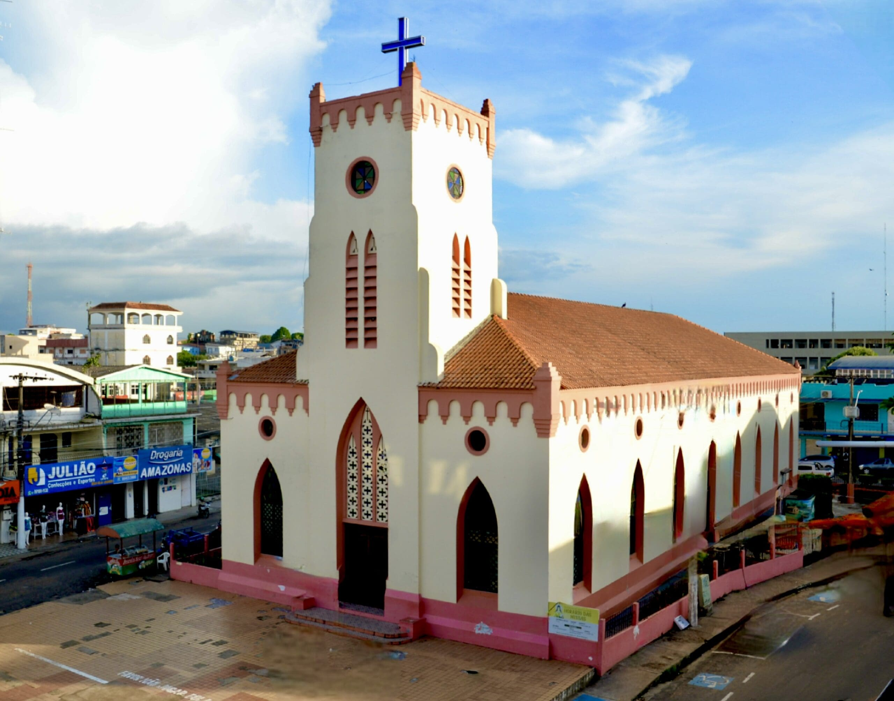
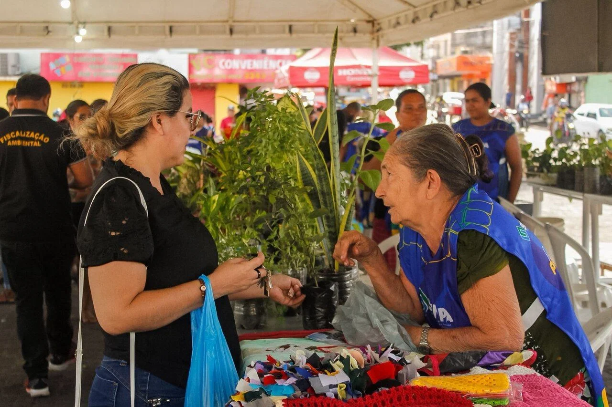
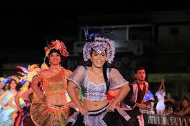
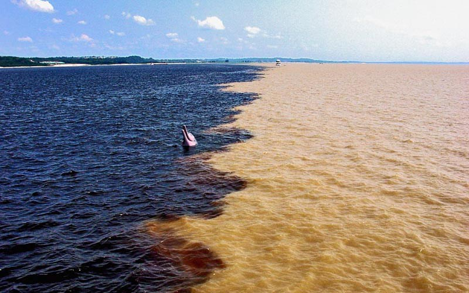
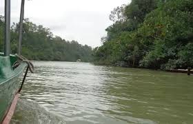

Praça Santa Teresa
Ponto histórico e tradicional de encontros da população tefeense. Local de convivência, manifestações culturais e eventos comunitários que fazem parte da identidade da cidade.
Praça Remanso do Boto
Principal palco de grandes eventos populares como a Feira da Agricultura Familiar, Arraial Folclórico, Réveillon Gospel e diversas apresentações culturais ao longo do ano.

Feira da Agricultura Familiar
Evento que valoriza os produtores locais, com venda de alimentos regionais, artesanato e produtos naturais, fortalecendo a economia e cultura local.

Festa da Castanha
Tradicional festa cultural que celebra a produção da castanha, reunindo música, danças, comidas típicas e valorização das tradições da região amazônica.

Arraial Folclórico
Festa popular com quadrilhas, bois-bumbás, danças típicas e apresentações culturais que movimentam a cidade todos os anos.

Praça da Onça
A Praça da Onça, oficialmente conhecida como Praça da Saúde (antiga Praça das Onças) em Tefé, Amazonas, é um importante espaço de lazer, convivência social e atividades físicas. Localizada no centro, oferece aulas gratuitas de zumba (terças, quintas e sextas), além de contar com carrinhos de lanches, sorvetes e coco, sendo muito frequentada pelos moradores

Encontro das Águas
Fenômeno natural entre o Lago Tefé e o Rio Solimões, proporcionando uma das paisagens mais bonitas da região amazônica.

Passeios de Barco e Igarapés
Experiência única de contato com a natureza, observação de botos, comunidades ribeirinhas e paisagens naturais.